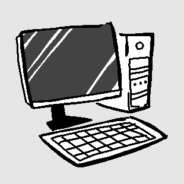
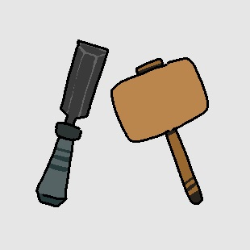

About Me
Hi, I'm Dalton Cournoyer, and I'm currently a student in education for software development, which is something I've been very excited to pursue.
Outside of school, I'm mostly a homebody, but I'm not afraid to dip outside of my comfort zone every once in a while.
Hobbies & Interests

Video Games
The most prominent hobby of mine, one that I share with most of my friends. Easy to pick up, hard to put down.

Woodworking
I picked this up rather recently with my grandpa. For me, it's all about what you can create with just a few tools and some pieces of wood.

Drawing
What once started off as just doodling in my notebook during recess turned into one of my biggest hobbies so far.